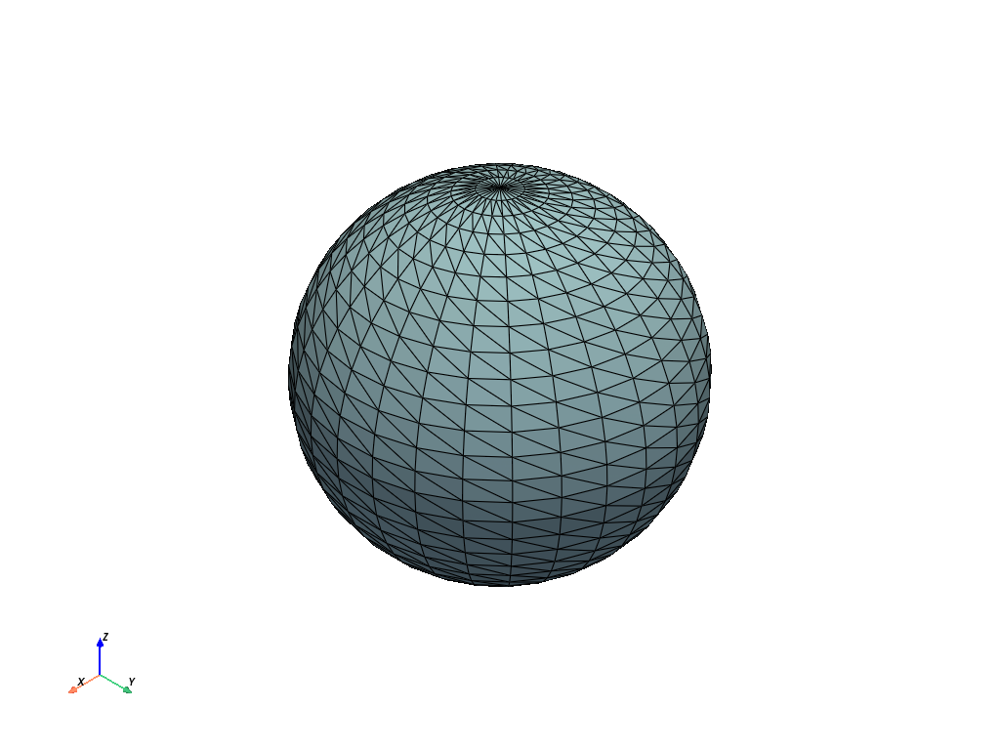

pyvista.plot#
- plot(var_item, off_screen=None, full_screen=None, screenshot=None, interactive=True, cpos=None, window_size=None, show_bounds=False, show_axes=None, notebook=None, background=None, text='', return_img=False, eye_dome_lighting=False, volume=False, parallel_projection=False, jupyter_backend=None, return_viewer=False, return_cpos=False, jupyter_kwargs=None, theme=None, hidden_line_removal=None, anti_aliasing=None, zoom=None, border=False, border_color='k', border_width=2.0, ssao=False, **kwargs)[ソース]#
Plot a PyVista, numpy, or vtk object.
- Parameters
- var_item
pyvista.DataSet See
Plotter.add_meshfor all supported types.- off_screenbool,
optional Plots off screen when
True. Helpful for saving screenshots without a window popping up. Defaults to the global settingpyvista.OFF_SCREEN.- full_screenbool, default:
pyvista.themes.DefaultTheme.full_screen Opens window in full screen. When enabled, ignores
window_size.- screenshot
stror bool,optional Saves screenshot to file when enabled. See:
Plotter.screenshot(). DefaultFalse.When
True, takes screenshot and returnsnumpyarray of image.- interactivebool, default:
pyvista.themes.DefaultTheme.interactive Allows user to pan and move figure.
- cpos
list,optional List of camera position, focal point, and view up.
- window_sizesequence, default:
pyvista.themes.DefaultTheme.window_size Window size in pixels.
- show_boundsbool, default:
False Shows mesh bounds when
True.- show_axesbool, default:
pyvista.themes._AxesConfig.show Shows a vtk axes widget.
- notebookbool, default:
pyvista.themes.DefaultTheme.notebook When
True, the resulting plot is placed inline a jupyter notebook. Assumes a jupyter console is active.- background
ColorLike, default:pyvista.themes.DefaultTheme.background Color of the background.
- text
str,optional Adds text at the bottom of the plot.
- return_imgbool, default:
False Returns numpy array of the last image rendered.
- eye_dome_lightingbool,
optional Enables eye dome lighting.
- volumebool, default:
False Use the
Plotter.add_volume()method for volume rendering.- parallel_projectionbool, default:
False Enable parallel projection.
- jupyter_backend
str, default:pyvista.themes.DefaultTheme.jupyter_backend Jupyter notebook plotting backend to use. One of the following:
'none': Do not display in the notebook.'static': Display a static figure.'ipygany': Show aipyganywidget'panel': Show apanelwidget.'trame': Display usingtrame.
This can also be set globally with
pyvista.set_jupyter_backend().- return_viewerbool, default:
False Return the jupyterlab viewer, scene, or display object when plotting with jupyter notebook.
- return_cposbool, default:
False Return the last camera position from the render window when enabled. Defaults to value in theme settings.
- jupyter_kwargs
dict,optional Keyword arguments for the Jupyter notebook plotting backend.
- theme
pyvista.themes.DefaultTheme,optional Plot-specific theme.
- hidden_line_removalbool, default:
pyvista.themes.DefaultTheme.hidden_line_removal Wireframe geometry will be drawn using hidden line removal if the rendering engine supports it. See
Plotter.enable_hidden_line_removal.- anti_aliasingbool, default:
pyvista.themes.DefaultTheme.anti_aliasing Enable or disable anti-aliasing.
- zoom
float,str,optional Camera zoom. Either
'tight'or a float. A value greater than 1 is a zoom-in, a value less than 1 is a zoom-out. Must be greater than 0.- borderbool, default:
False Draw a border around each render window.
- border_color
ColorLike, default: "k" Either a string, rgb list, or hex color string. For example:
color='white'color='w'color=[1.0, 1.0, 1.0]color='#FFFFFF'
- border_width
float, default: 2.0 Width of the border in pixels when enabled.
- ssaobool,
optional Enable surface space ambient occlusion (SSAO). See
Plotter.enable_ssao()for more details.- **kwargs
dict,optional See
pyvista.Plotter.add_mesh()for additional options.
- var_item
- Returns
- cpos
list List of camera position, focal point, and view up. Returned only when
return_cpos=Trueor set in the default global or plot theme. Not returned when in a jupyter notebook andreturn_viewer=True.- image
np.ndarray Numpy array of the last image when either
return_img=Trueorscreenshot=Trueis set. Not returned when in a jupyter notebook withreturn_viewer=True. Optionally contains alpha values. Sized:[Window height x Window width x 3] if the theme sets
transparent_background=False.[Window height x Window width x 4] if the theme sets
transparent_background=True.
- widget
ipywidgets.Widget IPython widget when
return_viewer=True.
- cpos
Examples
Plot a simple sphere while showing its edges.
>>> import pyvista as pv >>> mesh = pv.Sphere() >>> mesh.plot(show_edges=True)
 Plot a volume mesh. Color by distance from the center of the UniformGrid. Note
volume=Trueis passed.>>> import numpy as np >>> grid = pv.UniformGrid( ... dimensions=(32, 32, 32), spacing=(0.5, 0.5, 0.5) ... ) >>> grid['data'] = np.linalg.norm(grid.center - grid.points, axis=1) >>> grid['data'] = np.abs(grid['data'] - grid['data'].max()) ** 3 >>> grid.plot(volume=True)